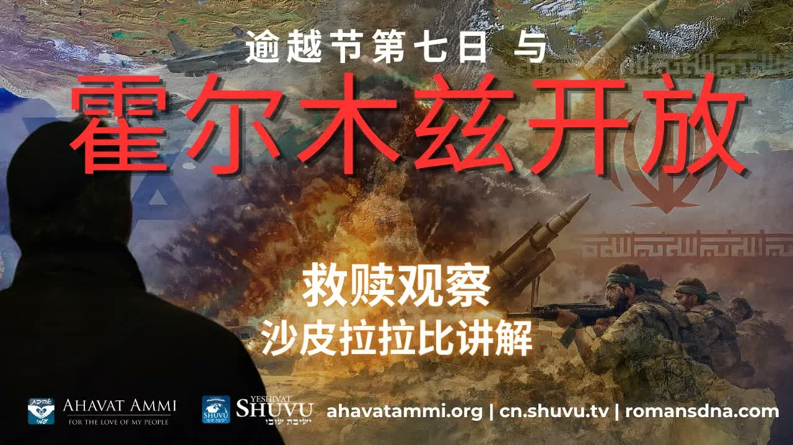

逾越節第七日、霍爾木茲海峽與葉特羅的餘民 Pesach Day Seven, the Strait of Hormuz, and the Yitro Remnant
當川普總統設下對伊朗的截止期限，恰好落在以色列逾越節第七日——那一天以色列全國都在誦讀《海之歌》、《Hallel》與法老覆滅的記述。沙皮拉拉比指出：這不是巧合。 When President Trump's deadline on Iran fell on the seventh day of Passover — the day all Israel reads the Song of the Sea, the Hallel, and the account of Pharaoh's drowning — Rabbi Shapira argues this is no coincidence.
在逾越節 (Pesach) 的第七日，以色列的會堂在當天晨禱中誦讀《出埃及記》第十四、十五章——紅海分開、法老的戰車覆沒、米利暗的鼓鈴與《海之歌》(Shirat HaYam)。塔木德 (Pesachim 117a) 教導：「完全的救贖不是逾越節的第一日，而是第七日。」沙皮拉拉比指出，正是在這一天，川普對伊朗的最後通牒到期；正是在這一天，全世界的目光集中在霍爾木茲海峽——而希伯來文「埃及」(Mitzrayim，מצרים) 這個字本身，意思就是「狹窄之地」、「海峽」。 On the seventh day of Pesach, synagogues across Israel chant Exodus 14–15 in the morning service — the parting of the Red Sea, the drowning of Pharaoh's chariots, Miriam's tambourine, and the Shirat HaYam (Song of the Sea). The Talmud (Pesachim 117a) teaches: “complete redemption is not the first day of Pesach, but the seventh.” On this same day, Rabbi Shapira observes, President Trump's ultimatum on Iran came due; on this same day the world's eyes were fixed on the Strait of Hormuz. And the Hebrew word for Egypt — Mitzrayim (מצרים) — literally means “narrow places,” “straits.”
一、極不尋常的日期同步I. A Remarkable Synchronization of Dates
拉比沙皮拉指出一個任何認真讀新聞的人都很難忽略的同步：川普政府公開表示，將在逾越節期間就伊朗作出重大宣告，而這個日期恰好落在逾越節第七日——猶太禮儀中標誌著紅海分開、法老覆沒、被擄者完全得贖的那一天。 Rabbi Shapira points to a synchronization that is hard for any honest news-reader to ignore: the Trump administration's signaled deadline for a major Iran announcement landed precisely on the seventh day of Pesach — the day of the Jewish liturgical year that marks the parting of the Red Sea, the drowning of Pharaoh, and the full deliverance of the captives.
對於現代讀者來說，這也許看似一個有趣的時間巧合。對拉比傳統來說，沒有任何日子的逾越節儀式是巧合——逾越節的曆法本身就是神在出埃及記 12:2 親手定下的：「你們要以本月為正月，為一年之首。」 To a modern reader this may look like a curious coincidence. To the rabbinic tradition, no Passover date is ever a coincidence — the Passover calendar was fixed by God Himself in Exodus 12:2: “This month shall be unto you the beginning of months; it shall be the first month of the year to you.”
二、為什麼是逾越節第七日？II. Why the Seventh Day of Pesach?
在以色列禮儀中，逾越節第七日是節日的「真正高潮」——它對應紅海的分開（出埃及記 14–15）。當天晨禱要誦讀Hallel（詩篇 113–118）。Hallel 中包括「我要在活人之地行在耶和華面前」（詩篇 116:9）和「我要奉耶和華的名」（詩篇 116:13）等表達感恩與救贖的核心經文。 In Israeli liturgy, Pesach Day 7 is the festival's true climax — corresponding to the splitting of the Red Sea (Exodus 14–15). The morning service includes the Hallel (Psalms 113–118), whose text contains the core liturgical expressions of thanksgiving and redemption: “I will walk before the LORD in the land of the living” (Ps 116:9), “I will lift up the cup of salvation and call upon the name of the LORD” (Ps 116:13).
「在以色列，我們知道完整的救贖不是第一天，而是發生在最後一天，就是逾越節的第七天，就是今天，是我們進入救贖的時刻。」——沙皮拉拉比博士 “Friends, in Israel, we know that complete redemption is not on the first day, but on the last — the seventh day of Pesach. That day is today. That day is the moment we enter into redemption.”— Rabbi Dr. Itzhak Shapira
塔木德 Pesachim 117a 進一步解釋：第七日所讀的詩歌與《海之歌》(Shirat HaYam) 一同回顧的，就是「海峽的開啟」(opening of the strait) 與「法老的下沉」(drowning of Pharaoh)——這不是宗教浪漫詩，而是一段歷史的紀念，預表更大的救贖。 Talmud Pesachim 117a explains: the Psalms recited on Day 7, together with the Shirat HaYam, recall the opening of the strait and the drowning of Pharaoh. This is not religious poetry — it is the memorial of a historical deliverance that prefigures a greater one to come.
三、Mitzrayim 與霍爾木茲 ── 一個希伯來文的鑰匙III. Mitzrayim and Hormuz — A Hebrew Key
希伯來文「埃及」(Mitzrayim，מצרים) 在字根上與mitzah（מֵצַר，「狹窄之地」、「海峽」）相連。出埃及記中，神不只是把以色列從一個地理上的「埃及」帶出來，更是把祂的子民從狹窄帶到寬闊——詩篇 118:5：「我在急難中求告耶和華，祂就應允我，把我安置在寬闊之地。」 The Hebrew word for Egypt — Mitzrayim (מצרים) — shares its root with mitzar (מֵצַר), meaning “narrow place” or “strait.” In Exodus, God does not merely bring Israel out of a geographical Egypt; He brings His people from the narrow into the wide. Psalm 118:5: “Out of the narrow place I called upon the LORD; the LORD answered me and set me in a wide place.”
拉比沙皮拉的觀察是這樣的：今天全世界所盯著的霍爾木茲海峽——伊朗用來威脅切斷世界石油供應的那個窄道——其字面意義就是Mitzrayim。當以色列正在誦讀「在海中開道」的經文時，神正在世界舞台上，再一次在另一個「海峽」中開道。 Rabbi Shapira's observation runs like this: the Strait of Hormuz that the whole world is watching today — the narrow channel Iran threatens to close to the world's oil supply — is, by definition, Mitzrayim. While Israel is liturgically reading the text about “opening a way through the sea,” God may be opening another “strait” on the world stage.
「Mitzrayim，霍爾木茲——在霍爾木茲之中也包含著 mitzah，狹窄之地，也就是埃及的含義。從今天開始我們讀什麼？就在川普發表聲明的時候，全以色列都在讀《海之歌》。」——沙皮拉拉比博士 “Mitzrayim, Hormuz — within Hormuz is the same mitzah, the narrow place, the very meaning of Egypt. What do we start reading today? Just as Trump is making his statement, all Israel is reading the Song of the Sea.”— Rabbi Dr. Itzhak Shapira
四、紅海與亞瑪力之戰 ── 兩種救贖模式IV. The Red Sea and the War with Amalek — Two Modes of Salvation
紅海事件之後不久，以色列就在利非訂與亞瑪力人開戰（出埃及記 17:8-16）。Mekhilta 與後來的拉比 Chaim Samuel Reggio 注意到：正是這兩件事——紅海與亞瑪力——共同促使葉特羅 (Yitro) 來到摩西這裡（出埃及記 18:1）。也就是說，紅海的開啟與亞瑪力的戰爭是同一個救贖事件的兩個面向。 Soon after the Red Sea, Israel fought Amalek at Rephidim (Exodus 17:8–16). The Mekhilta and later Rabbi Chaim Samuel Reggio both observed: it was these two events together — the Sea and Amalek — that drew Jethro (Yitro) to Moses (Exodus 18:1). The opening of the Sea and the war with Amalek are two faces of the same redemption event.
Sforno 提出一個微妙的觀察：在紅海，神是以顯而易見的神蹟拯救以色列；但在亞瑪力之戰，神並不顯出明顯的神蹟，而是透過摩西禱告與約書亞作戰來行動。為什麼？因為以色列在利非訂時，剛剛因為缺水而對神怠慢於妥拉。神救他們，但救的方式變了。 Sforno makes a subtle observation: at the Red Sea, God saved Israel with overt miracles; at the war with Amalek, however, God did not act through obvious wonders but through Moses' prayer and Joshua's battle. Why? Because at Rephidim Israel had just complained about water and grown lax in Torah. God still saved them — but the mode of salvation shifted.
在亞瑪力戰役後，摩西為神築壇，給壇起的名字是YHVH Nissi（יהוה נסי，「耶和華是我的旌旗」）。對比早些時候雅各為神築壇時所用的名 El Elohei Yisrael（「神，以色列的神」）——後者強調神對以色列特別的看顧，前者強調神是萬有的存在 (Havaya，הויה)，在祂面前萬族平等。 After the Amalek battle, Moses builds an altar and calls it YHVH Nissi (יהוה נסי, “The LORD is my Banner”). Contrast this with the earlier altar Jacob built and called El Elohei Yisrael (“God, the God of Israel”) — that name emphasises God's particular favour for Israel; the new name YHVH Nissi emphasises God as the universal Existence (Havaya, הויה) before whom all peoples stand equal.
五、葉特羅 ── 列國中的「餘民」V. Yitro — The Gentile Remnant
Shemot Rabbah（《出埃及記大注》）把葉特羅讀為「歸化者之父」(av ha'gerim)——是列國中歸入以色列家的所有義人的原型。葉特羅聽見紅海分開、聽見亞瑪力之戰，便起身來與摩西聯合。他成為摩西的岳父、米甸祭司之中第一位敬拜以色列之神的人。 Shemot Rabbah (Midrash on Exodus) reads Jethro as “the father of converts” (av ha'gerim) — the archetype of every righteous person from the nations who would later join the house of Israel. Jethro heard about the Sea and about Amalek, and got up. He became Moses' father-in-law and the first Midianite priest to worship the God of Israel.
拉比沙皮拉的應用是大膽的：今天的「亞瑪力」(Amalek) 是伊朗政權；今天的「霍爾木茲」是 Mitzrayim。當這兩件事一起在我們眼前展開時，葉特羅也將要來到——也就是說，列國中的義人餘民會起身、走向以色列、與耶書亞 (Yeshua) 的子民聯合。這正是撒迦利亞書 8:23 所預言的： Rabbi Shapira's application is bold: today's “Amalek” is the Iranian regime; today's “Hormuz” is Mitzrayim. When the two unfold simultaneously in front of us, Jethro is about to arrive — that is, the righteous remnant from the nations will get up, walk toward Israel, and join the people of Yeshua. This is exactly what Zechariah 8:23 prophesies:
「萬軍之耶和華如此說：在那些日子，必有十個人從列國諸方言中出來，拉住一個猶大人的衣襟說：『我們要與你們同去，因為我們聽見神與你們同在。』」——撒迦利亞書 8:23 “Thus says the LORD of hosts: In those days ten men from the nations of every tongue shall take hold of the skirt of a Jew, saying, ‘Let us go with you, for we have heard that God is with you.’”— Zechariah 8:23
拉比沙皮拉所說的這個「列國中的餘民」並不是抽象概念。他指的是每一位因聽見神在以色列的作為而起身、不再袖手旁觀的外邦信徒——華人基督徒包括在內。如果你曾為以色列禱告、曾在反猶聲浪中為神的子民站出來，你就是「葉特羅式的人」。 The “remnant of the nations” Rabbi Shapira is naming is not an abstract category. He means every Gentile believer who, having heard what God is doing in Israel, gets up and refuses to stand by — Chinese Christians included. If you have prayed for Israel, if you have stood for God's people against the rising tide of antisemitism, you stand in the line of Yitro.
六、對基督徒的意義VI. What This Means for Christians
第一，這篇教導重新將「逾越節」放回基督徒末世論的中心。對許多西方福音派教會而言，逾越節最多只是「最後晚餐」的背景；但在拉比的眼中，每一個逾越節都是一場現場的預言操練——以色列在禮儀中所讀的，是神今日在世界舞台上正在做的事。 First, this teaching restores Passover to the centre of Christian eschatology. For many Western evangelical churches, Pesach is at most the backdrop to the Last Supper. In the rabbi's eyes, every Passover is a live prophetic rehearsal — what Israel reads in the liturgy is what God is doing on the world stage that very week.
第二，YHVH Nissi 與 Havaya 這個名提醒我們：神不僅是「以色列的神」，祂更是萬有的源頭。在祂面前萬族平等——這意味著外邦基督徒對以色列的支持，不是出於民族主義，而是出於對那位掌管萬有之神的順服。 Second, the name YHVH Nissi / Havaya reminds us that God is not only “the God of Israel” — He is the source of all existence. Before Him all peoples stand equal. Which means Gentile Christian support for Israel is not nationalism. It is obedience to the God who holds all things in being.
第三，葉特羅的形象賦予外邦信徒一個極具尊嚴的角色：我們不只是觀眾，我們是進入帳幕、與摩西並肩的人。在末世的圖景中，列國的餘民與以色列同得彌賽亞、同見救贖。 Third, the figure of Jethro confers on the Gentile believer a position of dignity: we are not spectators. We are those who enter the tent and stand beside Moses. In the end-times picture, the remnant of the nations receives the Messiah together with Israel and witnesses the same redemption.
七、關於分辨VII. A Word on Discernment
拉比沙皮拉所運用的解經方法是猶太傳統中極其豐富的Drash（講道層次的解經）——並非P'shat（字面層次）。對於一個追求神學嚴謹的基督徒讀者來說，幾個應該保留謹慎的地方： The interpretive method Rabbi Shapira uses here is the rich Jewish tradition of drash (the homiletical layer) rather than p'shat (the plain reading). A theologically careful Christian reader should hold several points with appropriate caution:
（1）Mitzrayim ↔ 霍爾木茲的對應，是字源學上的共鳴——並非說先知曾「字面預言」霍爾木茲海峽。它的價值在於提醒我們字根中所承載的神學意義，而不是給我們一個地理路線圖。 (1) The Mitzrayim ↔ Hormuz mapping is an etymological resonance — not a claim that any prophet ever “literally predicted” the Strait of Hormuz. Its value is in reminding us of the theological weight embedded in the Hebrew root, not in giving us a geographical roadmap.
（2）「亞瑪力 = 伊朗」是猶太-彌賽亞圈中常見的對應，但它是類型學上的聯繫，不是字面身分。亞瑪力在聖經文本中是一個具體的古代民族；把現代政權套上這個名，是應用而非解經。 (2) “Amalek = Iran” is a common identification in Jewish-Messianic circles, but it is a typological link, not a literal one. Biblically, Amalek is a specific ancient people; mapping a modern regime onto that name is application, not exegesis.
話雖如此，那個更大的格局——救贖總是在「狹窄之地」開展、亞瑪力總是在「不專心於妥拉」之時臨到、列國中的餘民總是與以色列一同得救——這是聖經本身一再呈現的圖景，並非推測。 That said, the larger pattern — redemption always begins in “narrow places,” Amalek always rises when Israel grows lax in Torah, the remnant of the nations is always saved together with Israel — is the picture Scripture itself paints again and again. That is not speculation.
八、結語 ── 站在葉特羅的位置VIII. Closing — Standing in Jethro's Place
拉比沙皮拉以一句簡短的祝福結尾——但對於一位剛剛讀完這段教導的基督徒來說，問題已經被擺在桌上：你願意成為「葉特羅式的人」嗎？你願意聽見神在這個時代的作為——伊朗政權的搖晃、以色列的奇蹟般生存、霍爾木茲的開合——並起身與摩西聯合嗎？ Rabbi Shapira closes with a brief blessing — but for the Christian who has just walked through this teaching, the question is now on the table: will you become a Yitro? Will you hear what God is doing in this hour — the trembling of the Iranian regime, Israel's improbable survival, the opening and closing of Hormuz — and get up to stand beside Moses?
「Hashem，願神保佑。請點讚分享視頻，並在節日支持以色列行動。Shalom。」 “Hashem, may God bless. Please like and share the video, and support Israel's actions during the feast. Shalom.”